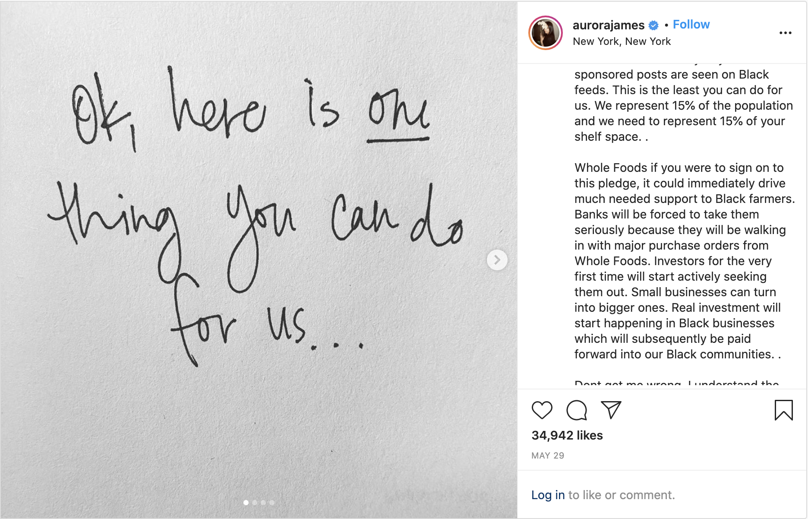
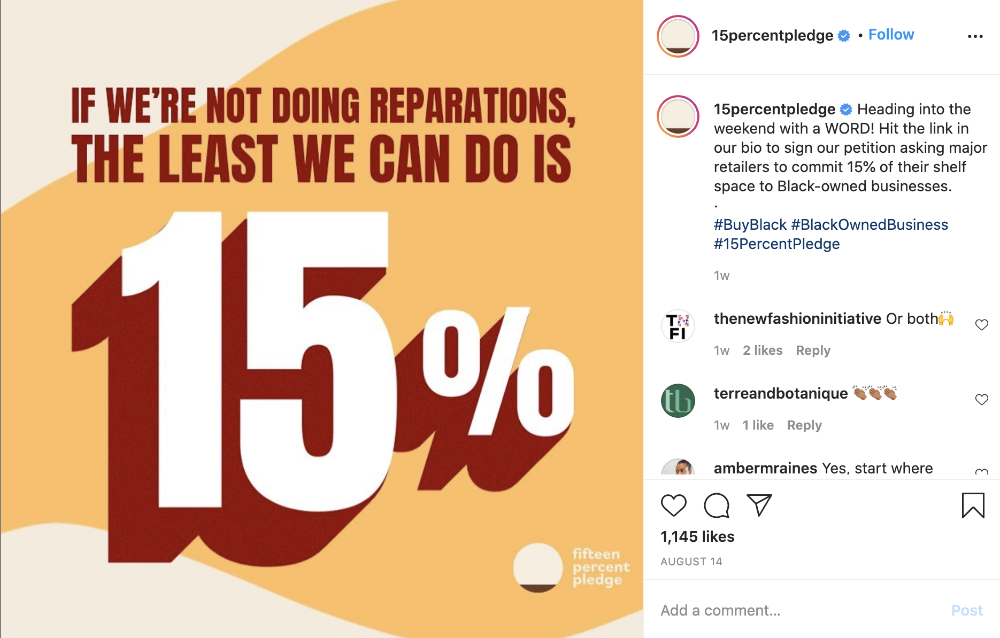

by OGOCHUKWU NWODOH
Aurora James, the founder of the brand Brother Vellies, created the 15% Pledge which calls for major retailers to dedicate 15% of their shelf space to Black-owned businesses. The Pledge has gained a lot of attention and some major retailers, like Sephora and Rent the Runway, have agreed to the pledge.
 From Aurora James’ personal Instagram account.
One of the claims made by James is that by retailers investing in Black businesses, “[b]anks will be forced to take them seriously because they will be walking in with major purchase orders... Investors for the very first time will start actively seeking them out... Real investment will start happening in Black businesses which will subsequently be paid forward into our Black communities.” Although it is commendable to invest in Black businesses - Black people deserve to be credited and paid fairly, we need to be honest about the limits of buying Black.
 On the 15% Pledge Instagram this post compares the pledge to reparations for Black people. Reparations means different things to different people, but a common thought is that it is a payment from the government to all Black descendants of slaves which compensates for the economic disadvantage that slavery and Jim Crow inflicted on African-Americans.
James’ claim about the power of investing in Black businesses aligns with the Black capitalism movement, a political movement among Black people that touts building wealth through ownership and entrepreneurship as the solution to racial inequality. While I love seeing wealthy Black people give back to their community, Black capitalism can never be a solution to the deep history of racial inequality. “Years of compounded divestment have made the politics of black capitalism useless” (The Nation). Black people as a collective do not have the power to change the economic state of the Black community and there is little evidence of a “trickle-down” effect from empowering Black businesses. We know that wealthy Black people still face racism. T.I., a prominent Black capitalist, was arrested after being locked out of his gated community. Nigeria has the most amount of Black billionaires (Forbes), yet the country struggles with serious economic inequality which is perpetuated by those billionaires. And “even renowned activists like W.E.B. Du Bois and Madam C.J. Walker owned black slums and busted black unions” (The Nation).
Black capitalism is dangerous. Racist politicians have used it to avoid passing meaningful legislation to help the Black community. Additionally, it encourages wealthy Black people to hoard their wealth and oppress poor people. It is a distraction from the root cause of Black oppression. We cannot forget that Black capitalism is still capitalism. Not everybody will win in capitalism; somebody will be oppressed.
Economic empowerment needs to be systemic. It needs to directly benefit poor and working-class people. It needs to be government-led. We should not believe that generating wealth for the small number of businesses that will benefit from the pledge will help with a large scale issue. While I am in support of buying Black, I also believe that we cannot conflate buying Black with systemic change. The Black community and our allies need to look further and confront the reality that racism is deeply ingrained in this country and a buy Black movement is just the beginning.
Additional Reading
The Unfulfilled Promise of Black Capitalism